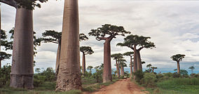

| Description | Photos |
|---|---|
|
The Avenue of the Baobabs, or Alley of the Baobabs, is a prominent group of Grandidier's baobabs (Adansonia grandidieri) lining the dirt road between Morondava and Belon'i Tsiribihina in the Menabe region of western Madagascar. Its striking landscape draws travelers from around the world, making it one of the most visited locations in the region. It has been a center of local conservation efforts, and was granted temporary protected status in July 2007 by the Ministry of Environment, Water and Forests—a step towards making it Madagascar's first natural monument. |
 |